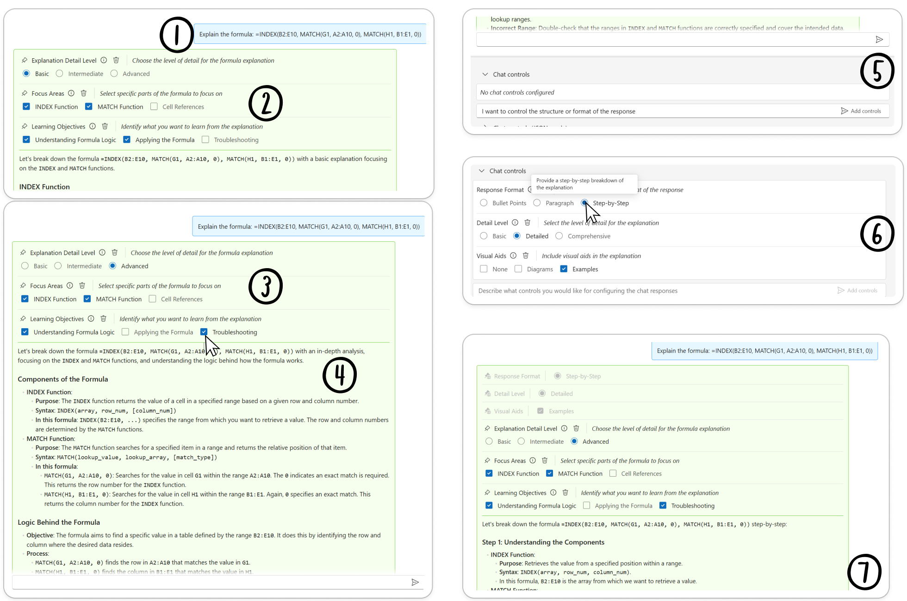
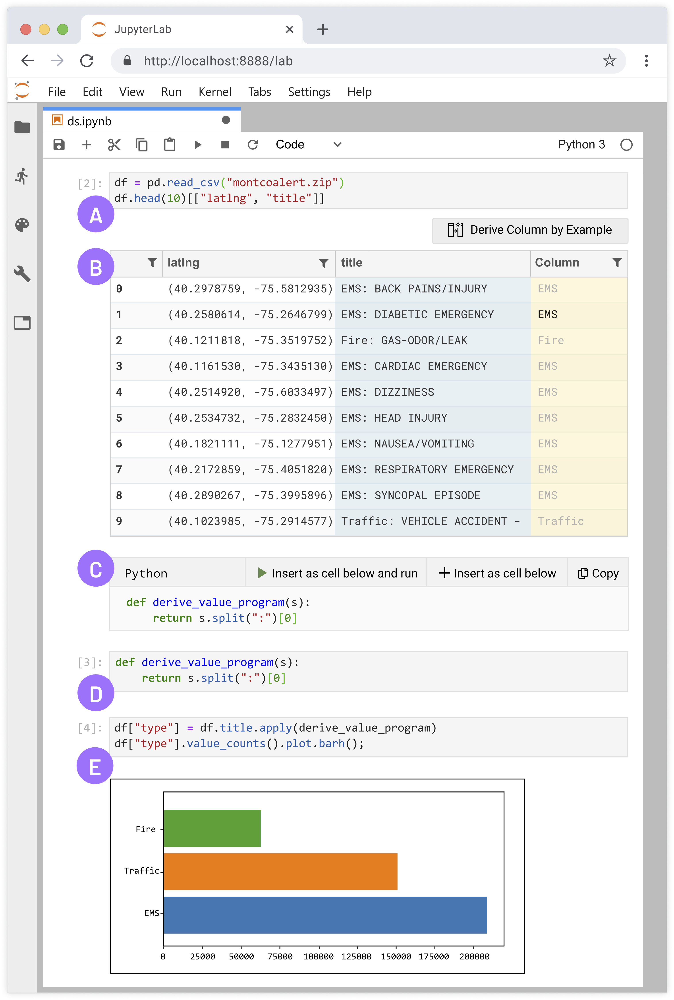
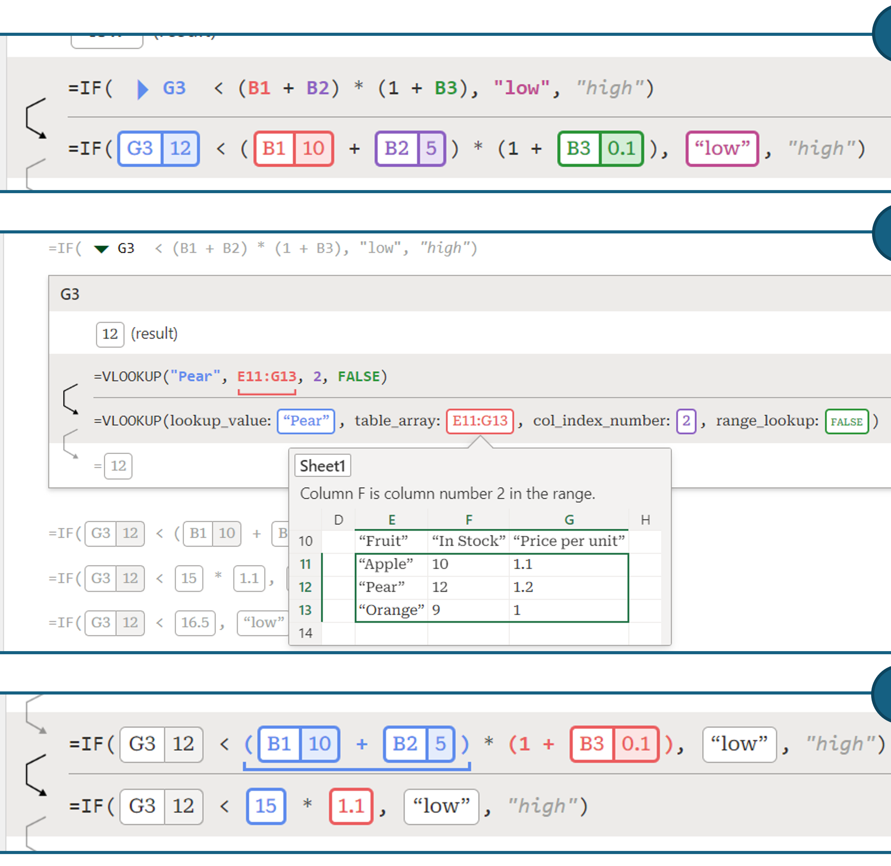

Security & AI Designer / Developer
I lead UX design engineering at Trent AI, a security startup making code and organizations safer. I am a mixed-methods HCI researcher designing tools for developers, data scientists, content creators, and learners. Publishing at venues such as CHI, DIS, and VLHCC.

Prompting generative AI effectively is challenging for users, particularly in expressing context for comprehension tasks. We address this challenge by creating Dynamic Prompt Middleware, which generates UI elements for prompt refinement based on the user's specific prompt. Users found it afforded more control, lowered barriers to providing context, encouraged task exploration and reflection, and improved the user experience of generative AI workflows. Promptly won 2nd place at Microsoft's 2024 Hackathon as part of the 'Everyday AI' Executive Challenge.

Created a unified programming-by-example interaction for synthesizing readable code within Jupyter notebooks. Data scientists found it made them significantly more effective at data wrangling.

Led HCI research on a novel functional debugger for dysfunctional spreadsheets which provided structured information for improved systematic formula debugging. Released as part of Excel Labs.
Leading UX design engineering for agentic AI-based software and AI security to make code and organizations safer.
Selected contributions beyond AI/CS research:
Currently leading UX design engineering at Trent AI (2025-present). Previously HCI researcher at Microsoft Research (2022-2025) and full-stack software engineer at Verizon. PhD in Cognitive Science from UC San Diego, MS in Computer Science from NC State.